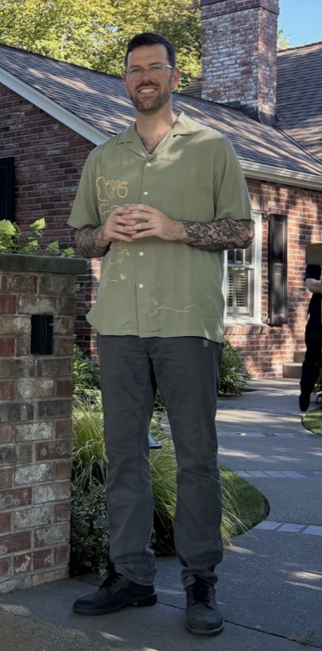

Research
A through line of my research is the relation between perception and conceptual thought. In particular, I'm interested in the natures of conception and perception, the mental processes in which concepts are deployed, and how we use concepts to coordinate with one another. I'm also interested in finding inroads from outside the contemporary analytic canon and tend to look for insights from philosophers in the existential/phenomenological (e.g. Heidegger, Kierkegaard, Beauvoir) and pragmatist (e.g. James, Sellars, McDowell) traditions.
At a more general level, my research has two "strands". The first strand starts by examining the resources the mind has at its disposal (e.g. concepts, attention, mental representation, memory) and considering how these resources bear on higher-order normatively-laden topics (e.g. competence, shared understanding, responsibility, justification). The second strand starts by observing some broadly social phenomena (e.g. coercion, identity, virtue) and trying to understand how best to frame these phenomena in terms internal to the mind (e.g. dispositions, belief fragmentation, mental transitions, perceptual skill).
Works in progress
Please reach out if you're interested in reading or discussing drafts.
- A paper on perceptual concepts
- A paper on concepts and the common ground
- A paper on the perception-cognition border
- A paper on the structure of mental files
- A paper on unintentionally coercive threats
Talks & Handouts
Handouts available upon request.
- Feb 2027 "Pointers, Concept Possession, and Perceptual Parroting" — APA Pacific 2027
- Nov 2025 "Hermeneutic Coercion" — UMass Amherst Graduate Conference
Teaching & Service
Teaching
* means assistant instructor; ** means primary instructor
- 2024
- Individual Morality and Social Justice* Fall · UC Berkeley
- 2023
- Ethics Bowl* Fall · San Francisco State
- Critical Thinking** Spring · San Francisco State
- 2022
- Ethics in Medicine* Fall · San Francisco State
- Critical Thinking* Fall · San Francisco State
- Introduction to Philosophy* Fall · San Francisco State
Service
- In spring 2024 and 2025, I was a chapter co-director for Corrupt the Youth at Oakland Technical High School in Oakland, CA, alongside Dill Malner and Georgia Cutter (2024) and Hannah DeBrine (2025).
- In fall 2023, I co-led an undergraduate ethics bowl class at SFSU with Macy Salzberger and prepared the students for an intercollegiate competition at Cal Poly SLO.
- From 2022–2024, I ran the Philosophy and Minorities and Philosophy (MAP) clubs at SFSU with Asia Baclay and Sean Sliger (alongside many others).
About Me
Before coming to Rutgers, I graduated with an MA (2024) and BA (2022) in philosophy from San Francisco State University. In a previous life, I studied audio engineering at the Musician's Institute. I'm also a participant in talkPOPc, which organizes public-facing events about topics in philosophy and aesthetics.
When I'm not thinking about thinking, I aim for a normal distribution on Letterboxd, post music on my SoundCloud, and occassionally write for my Substack. My favorite albums are Big Thief's Dragon New Warm Mountain I Believe In You and Ryuichi Sakamoto's Playing the Piano. I'm a fan of the Boston Red Sox and (reluctantly) support Manchester United.
